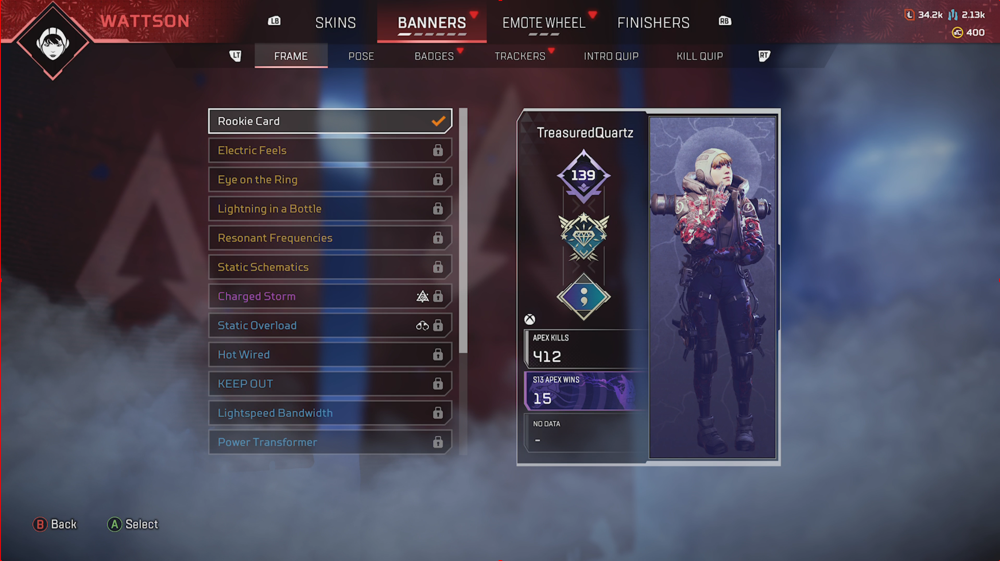
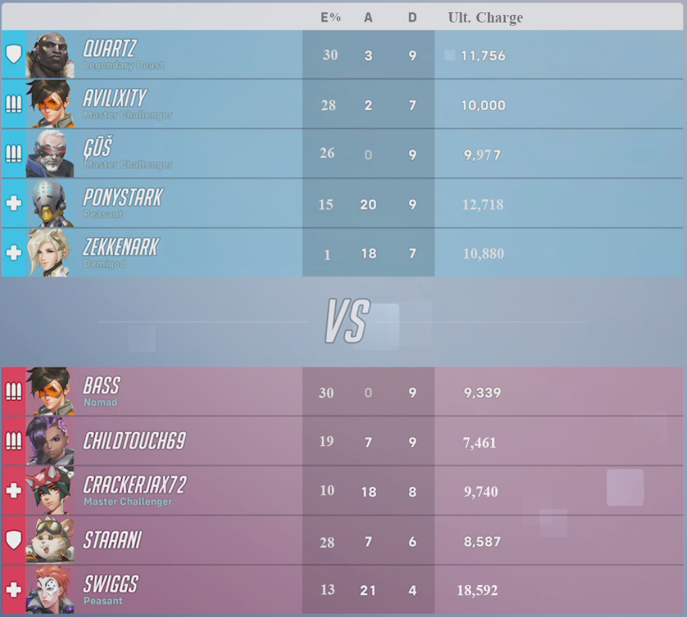
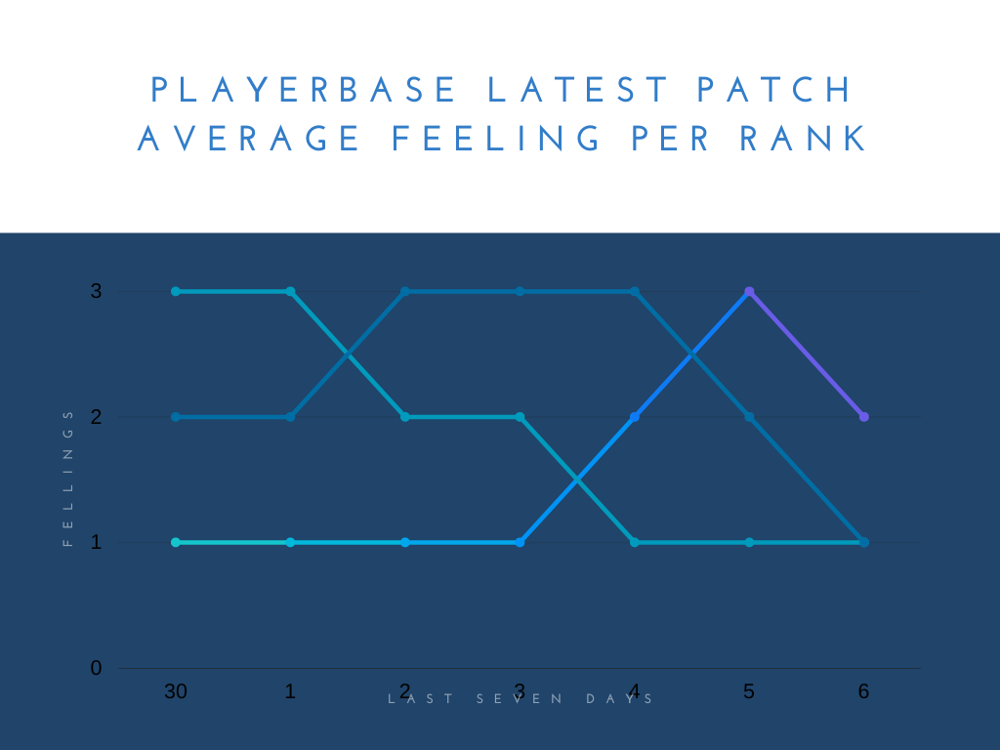

Overwatch 2 New Lead Developer
Prompt
You are now the lead developer of Overwatch, what changes do you make?
Battlepass reworks
Earning a new battlepass tier has the same animation as lootbox openings with an additional coin being added for each additional cosmetic in the tier.

Battlepass grants 4 cosmetics every level up.
Every tier has both premium and free rewards.
New Battlepass: Legacy Pass

There are now Legacy Passes. This is a "recent" type of battleass system implemented by 343 in Halo Infinte as a way to appease their players for a poor release.
- Every Overwatch 1 item has been removed from the shop and is in 6 new legacy passes that each cost $10.
- Overwatch 2 passes enter the legacy pass shop after 1 year.
- Only one Legacy Pass can be active while the seasonal pass is active.
- You cannot earn Prestige Pass rewards from legacy passes.
New Cosmetic Rewards
With the requirement to match the level of cosmetics from Overwatch 1 per Battlepass tier, more cosmetics are required to fulfill that need.
Expanded Title Customization
- Actual Text Content
- Materials
- Common: White, Black, Red, Green, Blue
- Rare: Gradient and RGB color wheel (Choose your own color)
- Epic: Metal, Emissive
- Legendary: Shifting Materials (Moving gradient)
- Special Effects
- Epic: Wavy, Pixelized, Shift L->R
- Legendary: Fire, Sparks, Beating Hearts
New Name Card Backgrounds
Animated backgrounds and hero speficic name cards. Some could even be glowing etc.
Battle Portraits

- 2 possible directions
- Scoreboard:
- Allow the portrait to the right of the scoreboard to change depending on selected player in match.
- Quick Career Profile:
- Popup when selecting a player's name card.
- Scoreboard:
- Several different backgrounds.
- Common: Solid colors
- Rare: Gradients, Metals
- Epic: King's Row, Hanamura, Locations
- Legendary: Hero Artwork, Fire, moving backgrounds
- Border
- Common: Solid colors
- Rare: Gradients, Metals
- Epic: Moving/Vines/Bubbles/Break rectangular frame effect
- Content
- Epic: Hero Poses
- Legendary: Hero Highlight Intros/Animated Heroes
- Multiple career specific rewards available to display such as:
- current rank
- season high
- career high
- other in-game challenge rewards.
Redefining Player Engagement Systems
Clans
In 2022, there was a leak on a Russian PTR Server of an image with a "CLAN C9" underneath their battle tag. In Hindsight, it looks as though Titles have overtaken their place, but developers had confirmed in the past that there was a "new social system: clans" being worked on.
Hopefully we can see an update or event release near the end of 2023.

Faction Missions
Replace Daily and Weekly challenges with "missions" from a faction. Either Talon or Overwatch and menu aestetics change depending on the faction.
There can be a global board that shows the amount of faction challenges completed for each faction, showing off how much of the world is supporting Talon vs supporting Overwatch.
More Factions can be added as more characters are added to the game for instance:
- Shimada Crime Family Syndicate
- Neutral Junker Gladiators
Name Card Challenges
Add hero specific difficult challenges with a wealth of rewards for long-term goals.
In-Game Menus
These would be playable menu screens essentially. Season 4 would have been on board the Star Watch Horizon Lunar Colony ship and taking orders from The Galactic Empeorer himself, Sigma. Season 3 would have been played on Hanamura with the cherry blossom trees, and Season 2 would have been on the ruins map of ilios taking orders from Zeus herself.
More Player Information
Hero Tutorials
In-order to unlock a new hero, players must complete new challenges involving those heroes. I cannot speak for the first-time-user-experience, but for all Overwatch 2 heroes these challenges are fairly basic. From having you complete matches in their respective roles, to using their abilities in the practice range. I feel that a beter fit than these "challenges" would be to have a tutorial "mission" that teaches you each of their abilities similar to the training card in which you play as Soldier 76 and are told the basic of the game.
New Aftermath Screen
After being eliminated in Overwatch, there are many times where it is not entirely clear as to how you died. Assists will popup in the kill feed next to the icon of the player who dealt the final blow, but it is not clear whether you were being healed or damaged by another player at the same time.

If Players could see the amount of damage that they were taking over time and every player who participated in their death, then they would be able to have a clear picture of how they were eliminated.
A Better Scoreboard
The scoreboard has become infamous for misinformation within a match. Almost becoming more of an ego feeder, than useful information.
Eliminations require one point of damage for credit and results in a bloated figure, which can become confusing to new players as the enemy deaths statistic does not add up to be equal to the elimination statistic. Instead I propose an Elimination Participation Percentage to be tracked instead. An average of all team members' participation (damage relative to max health) in total eliminations will be tracked.
Healing, Damage, and Mitigation all also have a miniscule place on the scoreboard. Characters such as Roadhog may indicate an amount of "feeding" through their healing stat. Moira is notorious for bloating her damage and healing numbers through a low constant damage, high Healing capability in general, and self healing. Damage heroes may inflate their Damage (or Supports their Healing) stat by only focusing the Tank character and not the other lower max Health targets. This causes player confusion as to their actual "value" created in a match. I suggest a statistic that tracks both healing and damage, while also removing self-healing, and reducing inflation caused by focusing Tanks. Ultimate Charge Generation would track all "value" created by a player even while having their Ultimate ability available. Another statistic to include may be a "Ultimate Charge Inefficiency" statistic as well, as that would indicate how much Ultimate Charge was generated while said Ultimate was available.

News Reel
With the introduction of the news reel in S3, this opens up massive in-game opportunities for gathering/providing data/information voluntarily from/to real players.
Weekly Survey
A survey that players may click on within the News Reel.
"How do you feel about the latest patch?"
- I Feel Good
- I Feel Neutral
- I Feel Bad
"After this patch, how do you feel about the heroes in the game? (You do not need to select every hero, click "next" when satisfied.)"
- Heroes Icon Display Screen
- Clicking on an icon brings up the following checkboxes:
- Is more fun to play?
- Is more fun to play with?
- Is fair to play against?
- Any additional comments about this hero:
- Free form empty text box to type a max of 500 words.
- Clicking on an icon brings up the following checkboxes:
Clicking next will display a results screen that shows a graph of every player's answers plotted as a graph.

- x-coord=time
- y-coord=survey answers
- viewing option for whole player base or color coded seperate lines per rank.
After submitting their answers for the day, players cannot change them until logging in the next day.
Developer communication
A link will be available in the news reel that connects to the latest dev blog.
Daily tweets may show up in the news reel as well.
Compensation for severe mistakes
Players will recieve in-game currency (not skins) when a DDOS or otherwise substantial issue arises that affects Overwatch and is out of the players' hands such as server issues, game-breaking bugs (A hero needs to be disabled), or wrongful bans/in-game suspensions, etc.
Expanded Hero Information
A new page has been added to all Hero Information pages that includes all relating current stats for abilities:

More Information relating to Effective HP:

The order and different effects of each health type in Overwatch:

The relative sizes of all projectiles in Overwatch:

Balance Update
General
I would much rather the game recieved no balance updates for a season and instead a massive bug fix/UI update was implemented. My favorite balance changes have been Zarya bubble crack visual FX in S3 and Sombra hack UI FX in S4. Most balance changes have been too miniscule to be excited for or directly damaging how fun the game was. That being said, if I were to make a balance update here are my changes:
All heros
50 more HP for all 250 and under heroes. 10% increase to ultimate costs for all heroes.
Instead of flat Nerfing all Supports' healing capabilities and Damage characters' Damage capabilities, we instead raise the base health of most characters in the game. To compensate for more possible ultimate charge generation, we increase the cost of all ultimates slightly.
Supports
Supports have off-screen-ally icons that appear on the edges of the screen (can be switched on/off/only critical allies in settings)
Supports also can see all allies' health bars above their own (can be switched on/off in settings.)
Kiriko
Suzu
- No longer applies an incorporeal effect.
- Cooldown is reduced to 7s (was 15s).
Swift Step
- Cooldown now scales 3s - 7s with teleport distance
Mercy
Guardian Angel (GA)
- Maximum downtime between consecutive GAs is 2.5s (was 3s)
Caduceus Staff
Staff now has a "beam strength" in which the attached beam looks physically smaller and less active the longer it is attached to an ally.
- 45hps boosted to 70hps for 1 second after attaching to a new ally.
- 15% damage amplification boosted to 30%
- Beam strength does not weaken during Valkyrie.
Resurrection
- Reduced cast time to instant.
- Reduced cooldown to 10s (was 30s).
- Restores the target by 200 HP (was Maximum Health)
- Now costs 20% ultimate charge to cast.
- Does not cost ultimate charge during Valkyrie
- Restored to Maximum Health during Valkryie.
Caduceus Blaster
- Can no longer damage enemies.
- Heals 10 on impact and 10 on Area-Of-Effect for allies.
New Alternate Fire Mode.
More precise hitbox, and blue bullets
- 20 impact damage toward enemies
- Applies a 5% damage amplification effect against the target
- Duration 1 second
- Stacks up to 5 times
- Duration refreshes with each application.
Moira
Alternate Fire
- Alt fire reduced to 20dps (from 50) and 20hps (from 24)
Biotic Orb
- Orbs are now damageable. Dealing damage to the orb now reduces the pool of healing/damage the orb has.
Biotic Orb: Healing
- Allies attached to the orb recieve 50% more healing
- Healing reduced to 30hps (45 with boost) from 50
Biotic Orb: Damage
- Damage reduced to 41dps (45 with boost) from 65dps
- Enemies attached to the orb have "sickness" applied to them
Sickness
- Green tint to view.
- Far objects become blured.
- 10% damage amplification against victims.
Baptiste
Biotic Launcher
- Damage reduced to 5dmg-25dmg from 7.2dmg-25dmg
- Fall-off range decreased to 15m-45m from 25m-45m
Regenerative Burst
- Healing-Over-Time removed.
- Cooldown has been reduced to 10s from 15s.
Amplification Matrix
- Is now ability 2
- Amplification effect reduced to 25% from 100%
- Cooldown is 8s
- Duration is 6s
Immortality Field
- Is now Ultimate Ability
- Now all allies around Baptiste are prevented from losing HP
- Hacking Baptiste will deploy the Immortality Field at Baptiste's location
- Using the ultimate again will deploy the Immortality field as normal for remaining duration.
- Duration is increased to 15s
- Immortality Field (deployed) Health increased to 350 from 150.
- Area-Of-Effect increased to 10m
- Area-Of-Effect (deployed) increased to 7m from 6.5m
- Dying as Baptiste will deploy immortality field at his death location for the remaining duration.
Brigitte
Health Pool
- Health is 200 (this overrides general 50 additional health for all heroes)
- Armor is 100
Inspire
- Passive Removed
Shield Bash
- Cooldown reduced to 4s from 5s
Repair Pack
- Overhealth is now generated by Heal-Over-Time when Full Health.
- Overhealth is removed after 2s after Repair Pack's Heal-Over-Time effect has ended.
- Overhealth Maximum is half the target's Maximum Health.
- Cooldown reduced to 3s from 6s.
Damage
New Role Passive: Damage Cascade
- Damaging a hero increases damage against that hero for 2s. Stacks with itself.
Bastion
Configuration: Assualt
- While active, Tactical Grenade will explode on impact.
Sombra
Opportunist
Sombra deals more damage to revealed targets and detects critically injured enemies through walls.
- Reduced Damage amplification effect to 20% was 25%
Hack
- Hack effect now reduces rate-of-fire by 50%
- Hack effect duration reduced to 1s was 1.5s
- Reveal effect duration increased to 12s was 10s
Sojourn
Railgun Alt Fire
- Damage Increase Per Energy increased to 1.5 was 1
- Damage is 30 - 180 was 30 - 130
- Area-Of-Effect increased to 0.2 was 0.1
- Damage is now relative to amount of enemy hurtbox intersected with hitbox
- Enemy entirely in hitbox takes full damage
- Enemy halfway in hitbox takes half damage
- Can no longer headshot
- Is no longer affected by fall-off (should be minimal difference with hitbox intersection change)
- Can pierce enemies
Overclock
- Railgun Alt Fire can headshot on center pixel
- Headshots ignore intersection damage reduction
Symmetra
Sentry Turrets
- Can store 6 charges at once was 3
- Enemies are revealed when damaged
- Multiple Turrets can no longer attach to the same Enemy.
Tank
Role Passive:
- 30% Knockback Resistance.
- -30% Ultimate Charge Generated on Damaged/Healed.
- 50% Damage Amplification Resistance.
- 50% Stun Duration Reduction.
Doomfist
Rocket Punch
- Can now be aimed upward
- Cooldown reduced to 3s from 4s
- Max Damage on Impact reduced to 40 was 50.
- Wall Slam damage is now consistent with impact damage
- Charged Wall Slam Damage and stun time scales with knockback distance.
- After 0.2s (Rocket Punch Impact Enemy stun duration is 0.4s), Stun Time and Wall Slam damage will fall-off until minimum damage and time.
- This means there is no seperate stun time.
- If an enemy hits a wall before the impact stun duration is over (0.4s), then they are stunned for the rest of the impact stun duration.
- Players that cannot be knocked back now take the additional wall-slam damage.
Empowered Punch
- Punching DVa's bomb will send it in Doom's Direction.
- Punching Sigma's Accretion will destroy the rock
- Doomfist can no longer be knocked down by Reinhardt's Charge, Brigitte's Shield Bash, or Doomfist's Rocket Punch.
- Two Empowered Punches will knock each other down while also applying the enlarged hitbox.
- The other player will be knocked down as normal and unaffected by the knockback and damage of the punch.
- The larger hitbox will still activate and affect all players behind the knockeddown player.
Power Block
- Split into two parts
- Power Parry during first second of activation
- Power Block after Power Parry ends
- No Longer awards Empowered Punch
- 50% Damage reduction
- 30% self-slow
- Infinte Duration
- 4s cooldown
Power Parry
- Fortified Effect
- Has 100 Damage Blocked Threshold
- Awards Empowered Punch
- Ends the ability with no cooldown
- Halves Power Parry's next Duration for 3 seconds (Stack up to 16 times.)
- Duration 1 second